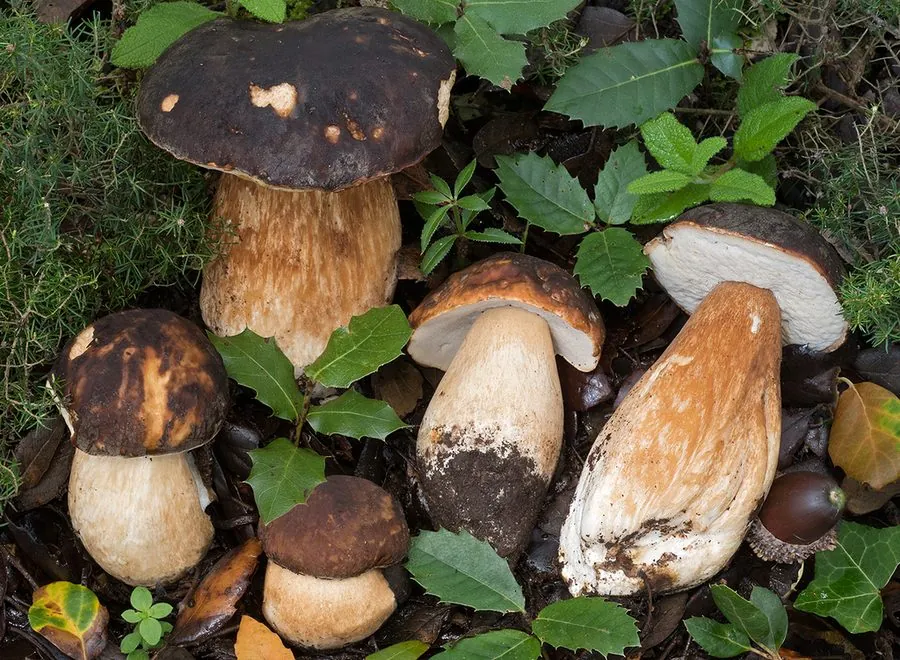

真菌 · 真菌界
黑牛肝菌 Boletus aereus

黑牛肝菌的菌盖呈深褐至近黑色、表面如绒布，菌肉白色且不变蓝，是欧洲最名贵的牛肝菌之一，也是上等的野生食用菌。
- 分类
- 门担子菌门纲伞菌纲目牛肝菌目科牛肝菌科属牛肝菌属
- 栖息环境
- 栎树、栗树等阔叶林地面，与树木形成外生菌根
- 地理分布
- 地中海沿岸与南欧，中国西南林区有近缘种分布
- 保护级别
- 暂无评估（IUCN 未评估，中国未列入重点保护名录）
物种志
黑牛肝菌是担子菌门牛肝菌科的外生菌根真菌，子实体单生或群生。菌盖半球形至平展，直径 5–15 cm，表面深褐色、黑褐色至近黑色，干燥时呈绒布状，湿润时略黏；菌肉白色、厚实，切开后不变蓝，这是它与红网牛肝菌等近缘种的重要区别。菌盖下面为菌管，幼时白色，成熟后变为淡黄色至黄绿色，孔口细小。菌柄粗壮，淡褐色至褐色，表面有细密的网纹；孢子印橄榄褐色。
黑牛肝菌与栎树、栗树等阔叶树形成外生菌根，生于温暖地区的阔叶林地面，夏秋季出菇，主要分布于地中海沿岸和南欧，中国西南林区有近缘种。它香气浓郁、肉质紧实，与美味牛肝菌、网柄牛肝菌并称欧洲三大名贵牛肝菌，常用于意面和煎烤。牛肝菌必须充分加热后食用，生食可能引起肠胃不适；采食时要确认菌肉不变蓝、菌管口不是红色，以免与有毒种类混淆。
形态与习性
- 菌盖直径 5–15 cm，深褐至近黑色
- 菌肉白色厚实，切开不变蓝
- 菌管幼时白色，后变淡黄绿色
- 菌柄粗壮，有细密网纹
- 孢子印橄榄褐色
- 食用性可食，必须充分加热
- 习性与栎、栗等形成外生菌根
趣味知识
- 黑牛肝菌的菌盖像一块深色的绒布，颜色接近黑色。
- 它切开后菌肉不变蓝，这一点可以与红网牛肝菌区分。
- 它与美味牛肝菌、网柄牛肝菌并称欧洲三大名贵牛肝菌。
- 黑牛肝菌香气浓郁，常用来做意面和煎烤。